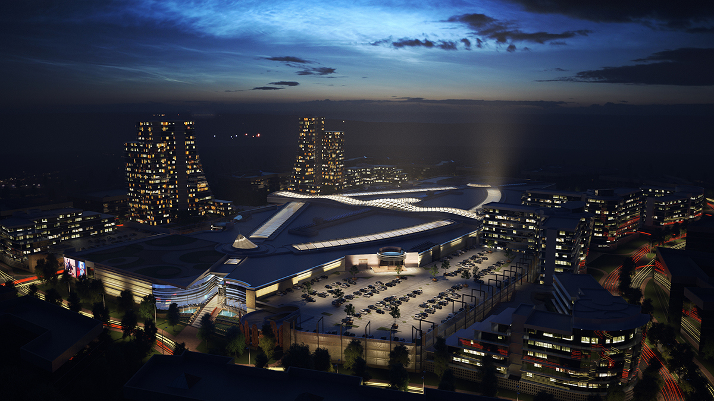
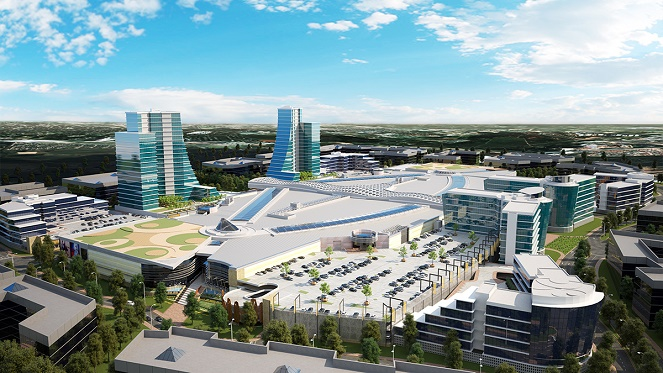
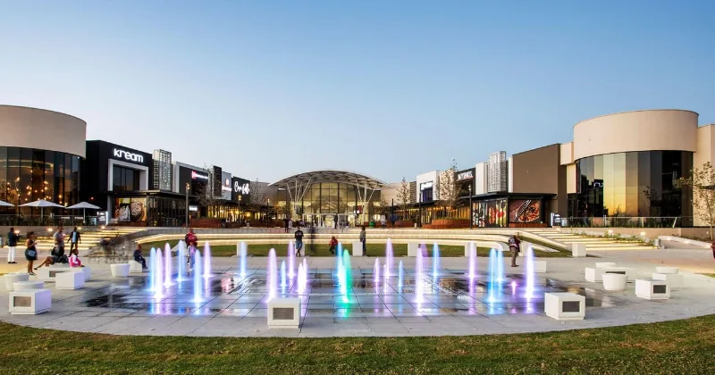

Pine City Mall is a shopping destination in Gauteng that offers a variety of stores, restaurants, and entertainment options. Whether you are looking for fashion, groceries, toys, or electronics, you will find something to suit your needs and budget at Pine City Mall. Some of the popular stores include Mr Price, Markhams, Cotton On, Pick and Pay, Woolworths, and Toys R Us. If you are feeling hungry, you can choose from a range of restaurants, such as Wimpy, Spur, Nandos, Xpresso, and Krispy Kreme. For a fun and immersive movie experience, you can visit the Sterkinkor IMAX cinema, which features the latest releases in high-definition and surround sound. Pine City Mall is the perfect place to shop, dine, and have fun with your family and friends.



